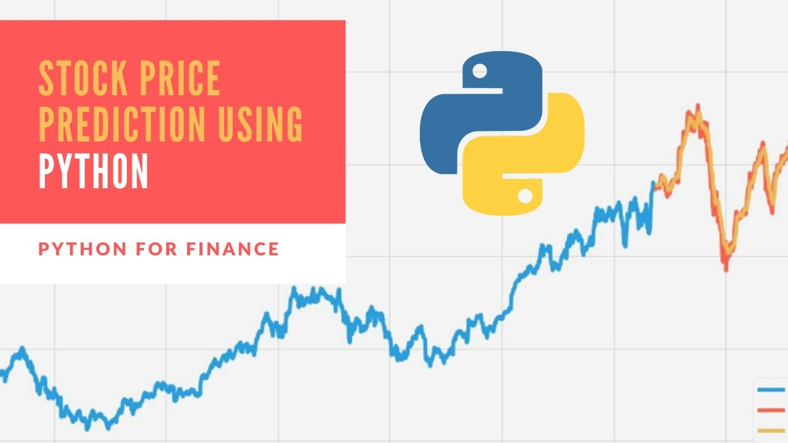
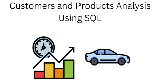

Jeevesh Chhabra
Data Analyst | IT Support Specialist
I am a dedicated professional with a passion for data-driven decision-making and technology support.
With experience in machine learning, data analysis, and IT support, I strive to create solutions
that optimize efficiency and drive innovation. My goal is to leverage my technical skills to contribute
to impactful projects and provide exceptional support in both data analytics and IT domains.

Used Plotly's Open Street Map to generate maps for our dataset.
Optimized Classroom Space Utlization for Norquest college using python, SQL, and dash to deploy a Machine Learning model.

Using Prophet method, we will be predicting the price of stocks of GSPC and WMT(Walmart).

This SQL file contains the data analysis done on Sales data. Using some basic Joins and Sub queries, I have answered few questions based on sales data..

Using the data from Walmart, Prepared an interactive dashboard using PowerBi to show the trends in sales and revenue generated.
Optimization of Urban Food Drive Operations Using Python, Machine Learning and other Data Analysis Techniques for Route Efficiency.